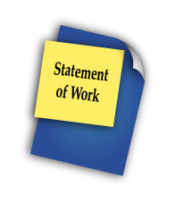
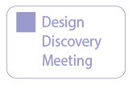
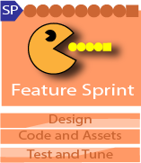

July 31, 2026
- gamedesign
- gamedev
You, The Client
You, the client, are a key member of the game design team. You bring to the game design all the targets and constraints.
- ☐ Target Learning Objectives
- ☐ Timeline
- ☐ Budget
- ☐ Technology/Platform
- ☐ Distribution Strategy
- ☐ Research/Testing Requirements
- ☐ Who are your users?
- ☐ Who are your Subject Matter Experts (SMEs)?
- ☐ Who are your stakeholders?
Your Product Owner/Instructional Designer
Our Teams are typically working on 2 to 5 games at the same time with each project lasting from 5 to 18 months. Your project will be led by on of our product owners/instructional designers.
Product owners/Instructional designers manage the project and teams (through each team's team lead) to ensure that the team is always focused on achieving your goals. Leveraging Agile practices, your Instructional Designer works closely with you and the development team to identify your must-have features and align them with the realities of time and technology.
Set the budget, scope, and makes sure it ships on time and on budget
Participate in document client calls
Owns all scheduling - Assign tasks, updates iterations, run and document sprints and daily SCRUM meetings (JIRA)
Verifies the project meets the requirements of the Statement of Work (SOW)

Design Discovery
During Design Discovery you will meet the next person in the process, the Game Design team's lead. Much of the early planning on your game is done by the lead and when the Design Discovery has nailed down what you want in your game then the Game Design Team's team lead will bring in the rest of their team in.
In my workplace, there is generally a period before production where most of the work falls on the designer’s shoulders. It’s usually me doing this by myself while my future team finishes up another project. I’ve found that there is a sweet spot during this time where I’ve designed enough of the features to be able to pitch the game to them but still haven’t fleshed everything out yet. It’s when I reach this magic moment that I rally the troops to get feedback before wasting my time on taking the design further. When you design a feature, think about what parts of the feature your team would be able to design better. If you want your game to have a system for collecting and managing inventory objects, for example, don’t come up with the specifics of exactly how the player adds, moves, shares, and deletes objects in their inventory. Let your interface designer solve that problem

Much of the early planning on your game is done by the Game Design Team's lead who willwork with yout through the Initiation and later bring in the rest of the team. She will be working to understand your needs simultaneous to designing the Design Document (DD) and the Statement of Work (SOW).
Core Concept & Vision: A high-level description of what the player will do and the project's primary objectives.
Design Pillars: Three to five fundamental design goals that guide all subsequent development choices.
Learning Objectives: In educational games, this outlines the exact skills or knowledge the player should take away.
Main Mechanics & Controls: Details on core player actions, how to perform them, and the resulting in-game feedback.
Art & Audio Style: Early visual and audio concepts, often paired with accompanying concept art and wireframes.
Basic Story Outline: A summary of the narrative (if applicable to the specific project).
Production Plan: Basic budget outlines and timeframes for development.

Design Document (DD)

The Design Document is the project overview, a central reference roadmap, rather than a lengthy detailed document. It is used to describe features and establish a shared vision between you and the development team.
Statement of Work (SOW)

The Statement of Work (SoW) is a project management plan that tracks all Release Criteria and development tasks. We’ll formally meet every two weeks for a Sprint review, during which we’ll discuss progress to date.
Hybrid Agile Methodology
While we don't use a pure Agile workflow, our hybrid workflow works exceptionally well for educational game software. Design discovery in a focused burst at the beginning allows us to be mindful of our client and their/our SME's time. Design sprints precede feature sprints due to the production needs of creative media, academic requirements, and rigid publishing constraints. Visual media naturally follow a flow of concept → model → animate → Code. Front-loading the design phase allows artists to build an asset library ahead of the engineering team.

The flow of work then happens clockwise through the process. The first pass all the way around the process completes the Alpha Release which will go through internal testing. Then, the next time around the workflow will result in the beta release. This is the release where a selected set of users will try the game and give feedback. The last time around will be the Gold Release which is the publicly available release.
The Design Phase
The Backlog Refinement Meeting is a time when everyone works out what to-dos need to be done over the design phase and many of the to-dos that will even be for later phases.

The design phase is split up into two-week sprints each will open up with a Sprint Planning Meeting. In that meeting, the to-dos still sitting in the backlog created in the Backlog Refinement Meeting will be looked at to select the to-dos that make sense for the upcoming two-week sprint. Yes, we do often figure out to-dos along the way that we need to add to the backlog or to the current sprint.
Now let's look more closely at what happens once the design team is brought in and the design sprints begin. Notice the little graphs in the Game Design, Art Spike, Wireframing, and Architecture Spike. You get a sense of the order in which things occur.


Work directly with clients and outside stakeholders
Stay in touch with team
Make the meeting pitch and deliver the GDD

Game Design Team

Design game mechanics that target learning objectives
Design game levels
Design puzzles
Asset Sheet for art
Write dialogue
Asset Sheet for sound
Ensure designs are feasible and that layer progression and game mechanics adhere to learning objectives

Game art can be static or animated, 2D or 3D. The process is a little different depending on which it will be.
2D Art
Animation starts internally with Motion Design. This involves the team sketching a concept of the final piece and creating basic animatics. These are used to identify the level of detail, timing, and the feeling the game should use to communicate the design goals effectively. Once established, the motion design is used for all pieces of animation in the game.
More than just characters need to be animated. Graphical user interfaces (GUIs) al so need their elements animated by artists sometimes. Some GUI elements, though, will be entirely programatic.
When a 2D character is designed, we need to plan out the pieces of the character's body and sometimes multiple angles of the character are needed in the game. Here you will see an example character we designed for a middle school history course game.
Next we create the finished 2D assets that will be prepared for animation with the client’s approval of the direction being taken.
Finally we create the animations. For characters and anything with complex moving parts we use Anima2D which is Unity’s skeletal animation system. For other types of animations such as UI animations we use Unity’s animation controllers and the Timeline system as appropriate to the task.
3D Art
3D art and animation takes more time up front to build. After all, you are doing the design work even on the hidden side of the object. However, once you have created the 3D object and animation you now have an almost unlimited way to view the animation giveing much more variety instead of having to re-draw the image in other poses or angles of view.

Text

To bridge text concepts and production, Filament Games pairs their Game Design Document (GDD) with a separate, visual wireframe pipeline. We keep wireframes out of the main GDD text, using them instead as a sequential mockup deck to map user experience before writing any code. By using wireframes, we avoid issues such as a game artist creates graphics only to find out that they needed to be broken up into parts to facilitate animation. A developer builds out a feature only to find that the feature was intended to work in a different way.

The "Two-Headed" Approach: They structure pre-production into two distinct documents: the GDD (focusing on rules, mechanics, and learning data) and the Wireframe Deck (focusing on layout, UI hierarchy, and user flow).
Click-Through Narrative: They build wireframes to read like a book or a slideshow. A developer should be able to click through the deck to experience the exact, logical sequence a player goes through from the title screen to the core gameplay.
Low-Fidelity Focus: Filament intentionally keeps wireframes simple, utilizing basic shapes, gray boxes, and temporary fonts. They stress that avoiding polished art during this stage prevents stakeholders from getting distracted by aesthetics rather than focusing on layout and functional flow.
Core Components in a Wireframe
Every screen modeled in a wireframe deck requires specific structural elements to be useful for engineers and artists:
Layout Blocks: Boxes that dictate the exact hierarchy and placement of UI elements, buttons, and instructional text areas. Already thought goes in to prioritizing the most important elements.
Visual Placeholders: Rough sketches or boxes indicating where gameplay feedback, timers, scores, or pedagogical meters will live.
Callout Labels: Numbered circles or markers placed directly over UI elements to link the visual component to an explanatory note.
Functional Annotations: A dedicated sidebar or bottom panel detailing exactly what happens when a user clicks a specific button (e.g., "Launches reward animation," "Saves state and routes to Level 2").

There are software engineers at work on multiple teams. In the design team the software people are front-end specialists. For a package manager our front-end team uses Node.js’s npm/pnpm + Vite / esbuild. We use these tools to encapsulate and sync source code to specific versions. As a studio we render to PixiJS, Phaser or WebGL2 / WebGPU. Based on past experience writing large Javascript projects, for more robust and scalable code we go with Typescript. All of our external data is stored as JSON.
At this point we have mature JS engines to chose from and no longer have to make our own. For 3D, Unity is our go-to engine.
Alpha Stage - Feature Sprint
The design sprints are done for the time being and now the focus is on developing the features for the Alpha Release. This would be a subset of the features that would appear in the Beta and Gold Release. This is a code heavy phase where the interactions, player input, and player feedback is put into place.


Just as in the design phases, each sprint is 2-weeks long and there is a testing sprint built in, this time at the last sprint. This is an in-house/stakeholder play test at this phase, not a play test where users are yet involved. That will happen at the next stage.

Text

AI has changed the landscape of coding and has become a very valuable tool for developers. Where the rapid transition is happening right now is learning not only where to best apply it but how to give it precise context, giving it detailed specifications, state machines, and robust test suites before any code is written. Ai can spit out all the things it has been trained in on from documentation, but where it often make blaring errors is the tribal knowledge that is inside an experiences software engineer's wealth of experience that they have learned along the way, especially in troubleshooting, that is not in the documentation. One of the new roles of an engineer is realizing how to best capture that and train AI to catch more errors before they become trouble. In essence, a software engineer has new skills to develop in architectural thinking, writing unambiguous specifications, and supervising AI agents, rather than just raw coding speed.

Some barriers are technical. Others arise from interaction design. Automated tools can confirm that a button exists and is labeled. They cannot determine whether a learner understands what to do with it under pressure. They cannot evaluate pacing, predict confusion, or detect when important cues are being missed due to sensory overload or UI complexity.
Accessibility
Meaningful accessibility testing involves asking:
Can a low-vision player interpret key interface elements during fast-paced activities?
Are input models consistent, discoverable, and supported across devices?
Is essential information conveyed through multiple sensory channels?
Can learners control the pace at which they receive instructions or feedback?
These questions can’t be answered by a browser extension or scan report. They require real-time observation, usability insight, and accessibility-informed QA.
Testing Sprint

Text

Text

Text
Text
Text
Hardening Sprint
Text

The hardening Sprint is the sprint where your goal is to reach readiness for release, whether that is the Alpha, Beta, or Gold Release.

Though a fair number of bugs pop up and are fixed in other stages, this is where the deep-seeking of bugs routes out what may have gone un-noticed up to this point or bugs that just was not yet gotten to.
The polish phase is the perfection stage, buffing out all the little imperfections that might have passed in earlier stages. This stage has the tweaks for alignments, perfect sizing, exact timing parameters, etc.
Optimization helps all the platforms the software was targeted to run on, but it is critical for older iPads and mobile.
Beta Stage
Advancing to the Beta (prototype) stage, we aim to introduce a playable version of all game features, incorporating adjustments from the Alpha play test. This stage is pivotal in validating the effectiveness of the changes for the intended learners. Engagement testing with real users of the game is an important aspect of this phase. Nevertheless, sprints are allocated after the Alpha play test to facilitate further enhancements prior to the Beta release.
Gold Release Stage
The Gold Release marks the public launch of the game. Depending on the intended platform, we deploy the game accordingly (e.g., embedding it on a chosen website or submitting it to platforms like the App Store or Google Play). We provide a standard 30-day warranty post-deployment for all our projects.